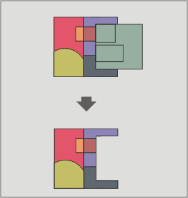

Differenza
Il geoprocesso "Differenza" lavora con due layer: il layer di input ed il layer di confronto. E' noto anche come "Spatial NOT", poichè estrae le geometrie del layer di input che non si sovrappongono a quelle del layer di confronto.
Le geometrie del layer di input e del layer di confronto possono essere poligoni, linee o punti. Il layer risultante avrà lo stesso schema alfanumerico del layer di input.

Questo geoprocesso è molto utile in numerose situazioni. Ad esempio, può essere usato in maniera complementare al geoprocesso "Ritaglia" (clip). Se "Ritaglia" consente di escludere tutte le geometrie che non appartengono all'area geografica di studio, "Differenza" consente di fare l'esatto contrario, ovvero esclude un'area specifica dal layer di lavoro.
Esempio: il trasferimento di competenze territoriali tra diverse entità amministrative. Se il governo nazionale trasferisce certe competenze ad una autorità regionale, può decidere di escludere l'area geografica del trasferimento in questione dalla propria banca dati.